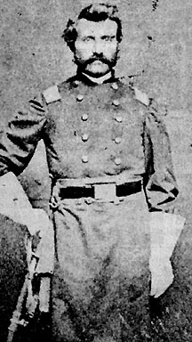

|

NAME: Marcus Spiegel
BORN: 1829
DIED: 1864
ALLEGIANCE: Union
HIGHEST RANK: Colonel
UNITS: 67th Ohio Infantry, Company C; 120th Ohio Infantry
RECORD: Enlisted as a captain in December
1861. Severely wounded outside Vicksburg in July 1863.
Killed in the Red River Campaign on May 3, 1864.
|
|
Marcus Spiegel's rise to command of a Union regiment was
both unlikely and uniquely American. Born the son of a rabbi
in Abenheim, Germany, in 1829, Spiegel left home at the age
of 20 for a better life in the United States. There, he
joined other immigrants grants making a living by peddling
goods across the vast Ohio countryside.
By 1861 Spiegel had carved out a comfortable life for
himself. The daughter of an Ohio Quaker had converted to
Judaism and become his wife. The couple had started their
own business and set up shop in Millersburg with their three
children. Spiegel had even become a Freemason and an ardent
Democrat. When the call went out for Union volunteers,
Spiegel's loyalty to his adopted homeland spurred him to
enlist in the 67th Ohio Infantry. His political and social
standing earned him the captaincy of Company C.
Spiegel wrote often to his beloved wife as he tramped across
the Virginia countryside with his regiment. Meanwhile, his
willingness to look after wounded soldiers earned him the
respect and admiration of his men. His superiors thought
well of him too, and at times left him in charge of the
regiment when its commander was absent. Some of the Ohioans
even took to calling him Colonel.
Late in 1862, Spiegel transferred to the newly formed 120th
Ohio, where his experience earned him a promotion to
lieutenant colonel. On March 20,1863, he was officially
commissioned a colonel, and he took command of the regiment.
Shortly after the fall of Vicksburg in July 1863, an
exploding shell severely wounded Spiegel. His wife welcomed
him home for several months of recovery. But by March 1864,
he was back with the 120th Ohio.
Several weeks after Spiegel's return, Confederates ambushed
the Federal transport City Belle near Snaggy Point on
the Red River. Most of the 120th was captured, but Spiegel
was struck by another shell--this time fatally. Spiegel's
name would live on in the memory of his wife, and in the
Spiegel Catalogue Company, which his brother Joseph started
after the war.
Source: Civil War Times Illustrated
39:5 (October 2000), 88.
|